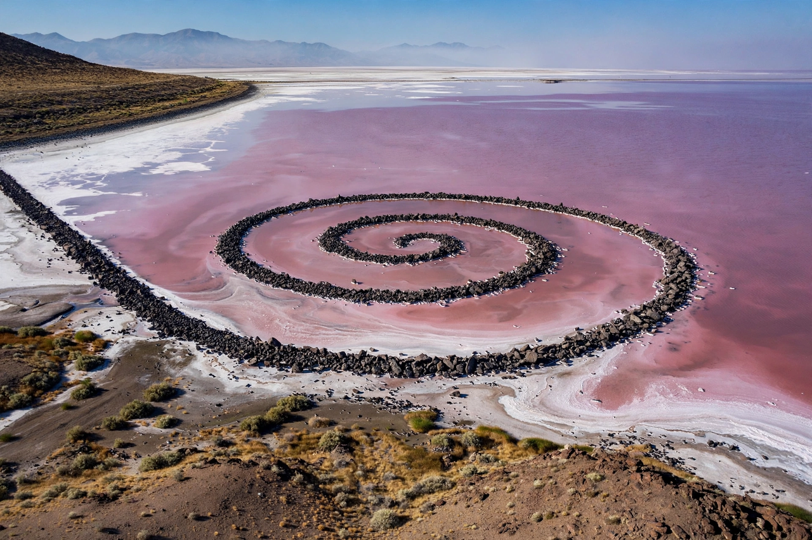

Land art
Land art, also known as earth art or environmental art, is an art movement that emerged in the United States in the late 1960s and early 1970s, in which landscape and the work of art are inextricably linked. Works are made directly in the landscape using natural materials — soil, rock, vegetation, water — often in remote sites away from galleries and museums, and are frequently documented for the public only through photographs, maps and film.

| Land art | |
|---|---|
| Period | 1968 – present |
| Region | United States, United Kingdom |
| Key artists | Robert Smithson, Michael Heizer, Walter De Maria, Nancy Holt, Richard Long, Andy Goldsworthy |
| Landmark work | Spiral Jetty (1970) |
History
The movement crystallised with the exhibition Earthworks at the Dwan Gallery in New York in October 1968. Artists rebelled against the commercial gallery system and the perceived sterility of minimalism by moving art-making out into the desert landscapes of the American Southwest. Robert Smithson's Spiral Jetty (1970), a 1,500-foot coil of basalt and earth at Rozel Point on the Great Salt Lake in Utah, became the movement's emblem. Michael Heizer's Double Negative (1969) displaced 240,000 tons of rock in the Nevada desert, and Walter De Maria's The Lightning Field (1977) arranged 400 stainless-steel poles in New Mexico to attract lightning strikes.
In Britain, Richard Long and Andy Goldsworthy developed a gentler, more ephemeral practice based on walking and arranging found materials. Many land artworks are subject to erosion and natural change, which artists accepted as part of the work's life; Spiral Jetty was submerged for decades before re-emerging during drought.
Themes and criticism
Land art addressed ecology, deep time, entropy and humanity's relationship to the Earth, though the monumental American earthworks were also criticised for the ecological damage of their construction and for echoing colonial attitudes to land. Later environmental art has placed greater emphasis on remediation of damaged sites and collaboration with ecosystems.
See also
Recreated from memory as part of the muse-webcrawl project.